Toggle navigation
BAS Timeline
Canaanite
c.3200 - c.1000
Sea Peoples
c.1300 - c.900
Early Kings
c.1000 - c.900
Divided Kingdom
c.900 - c.550
Persian
c.550 - 333
Hellenistic
333 - 167
Hasmonean
167 - 63
Herodian
43 BCE - 44 CE
Roman
63 BCE - 312 CE
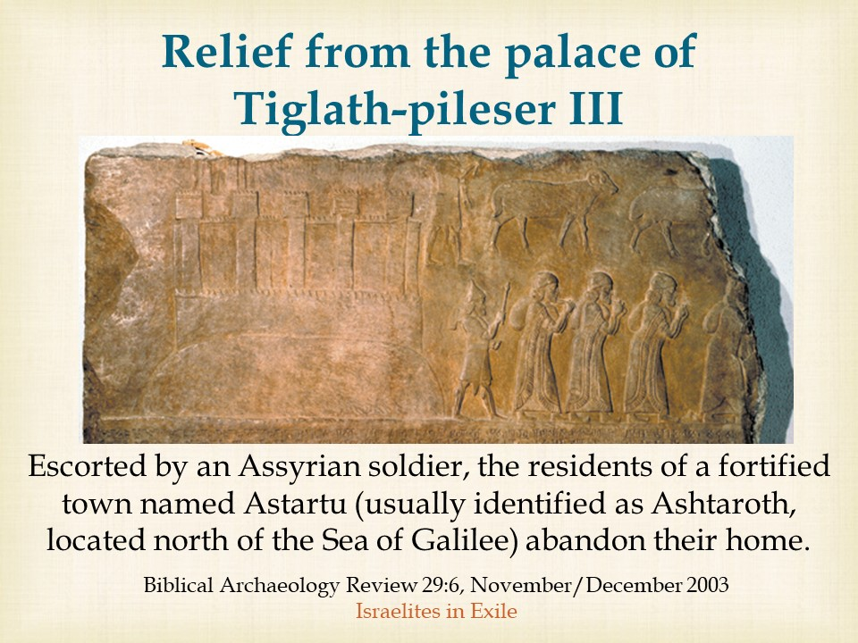
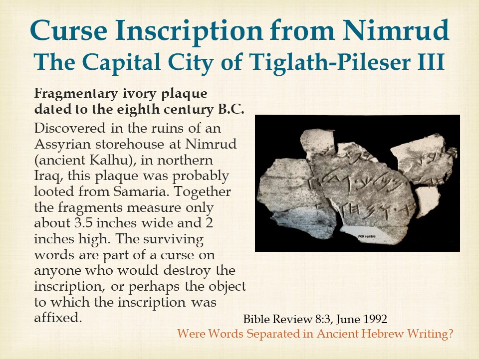
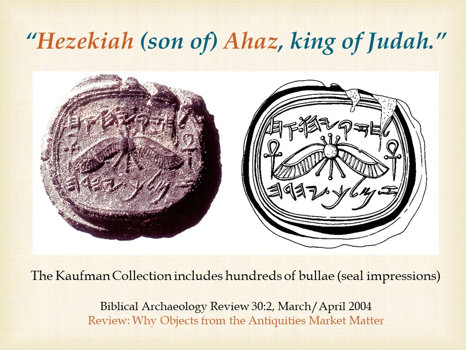
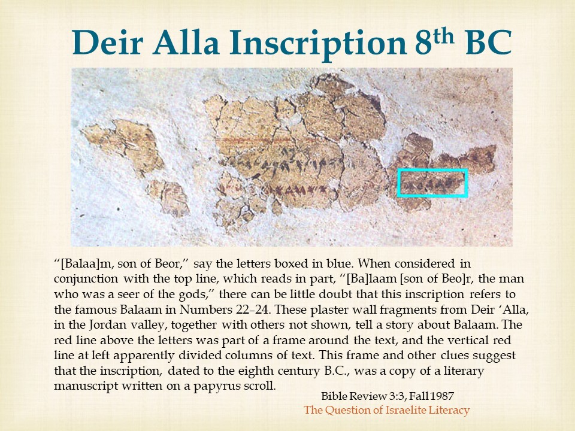
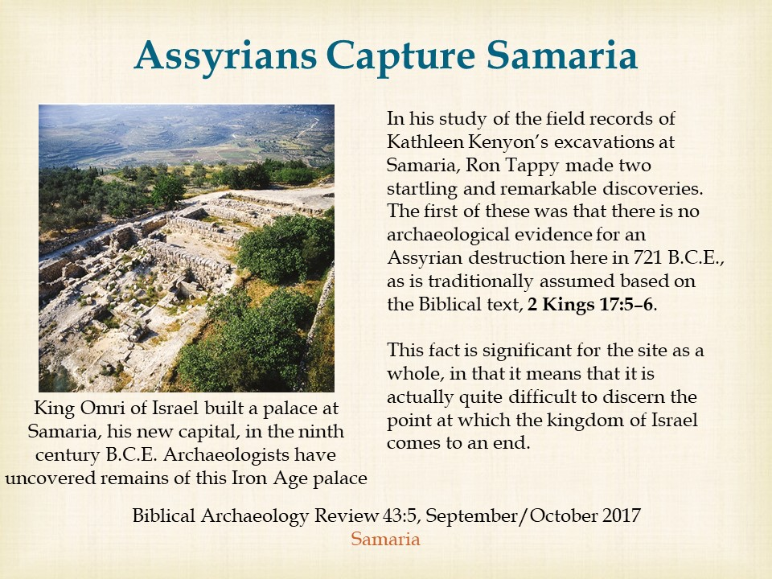
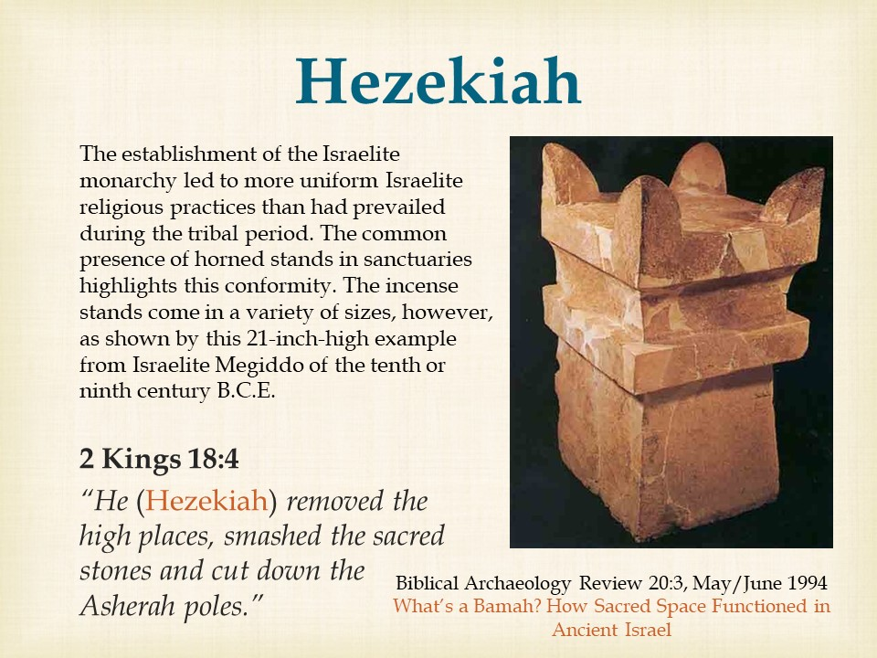
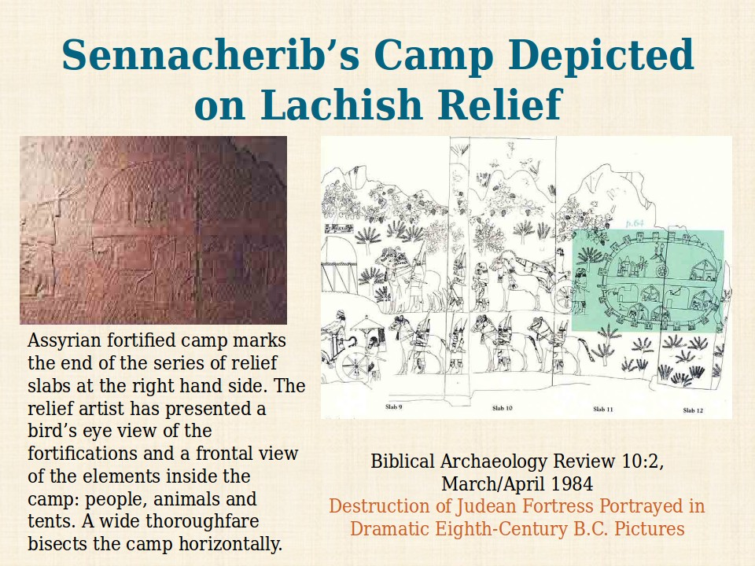
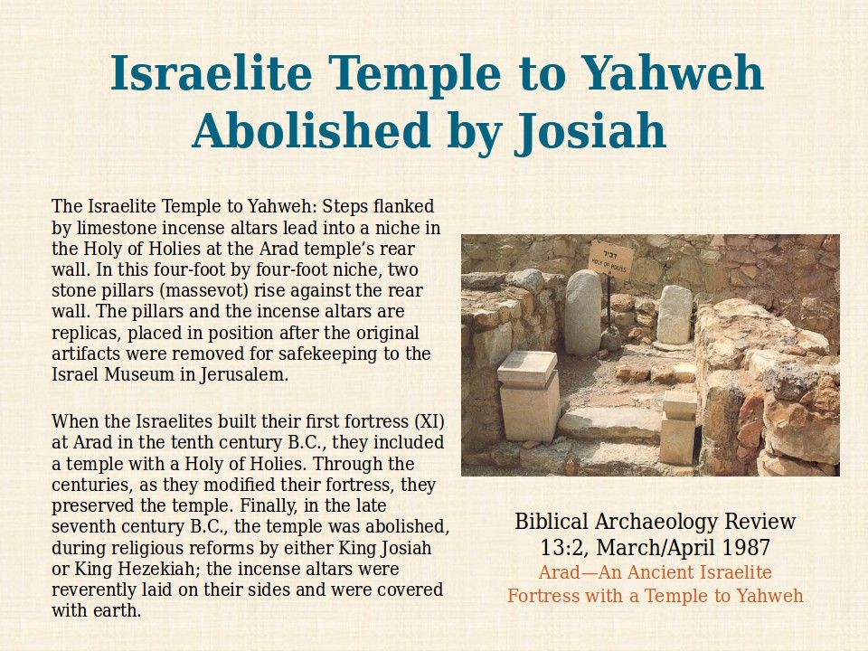
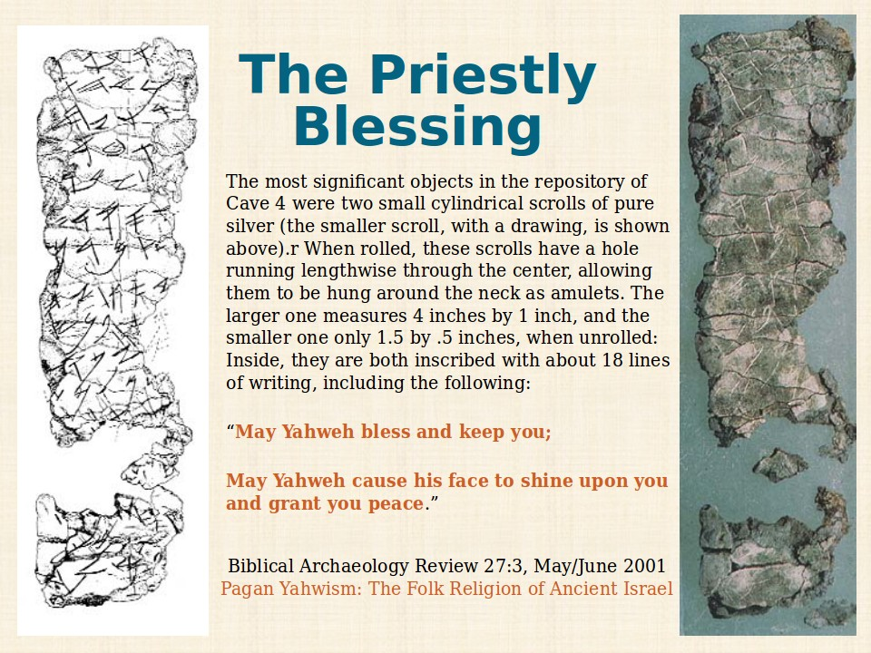
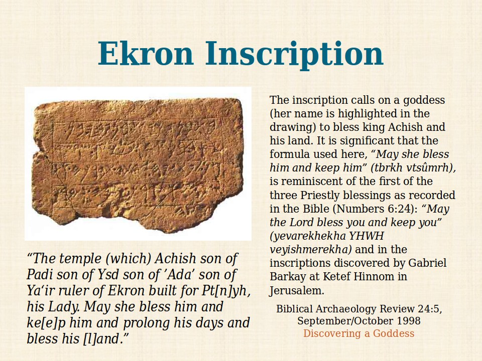
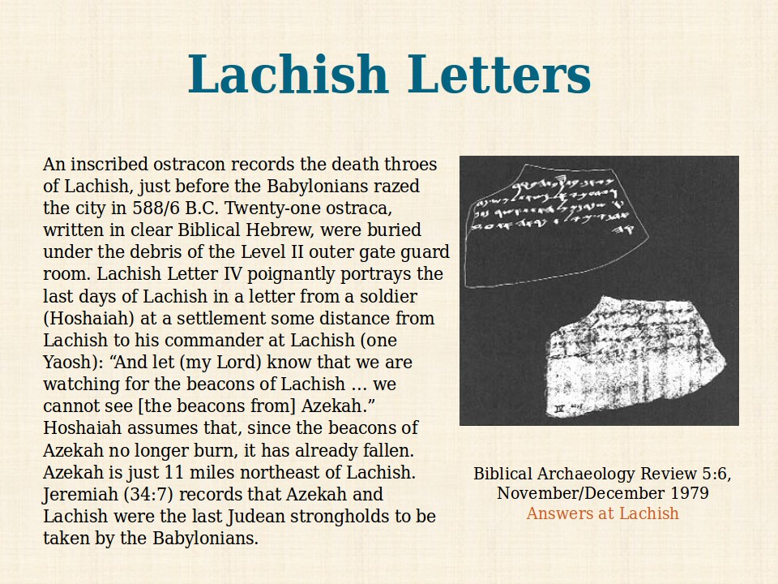
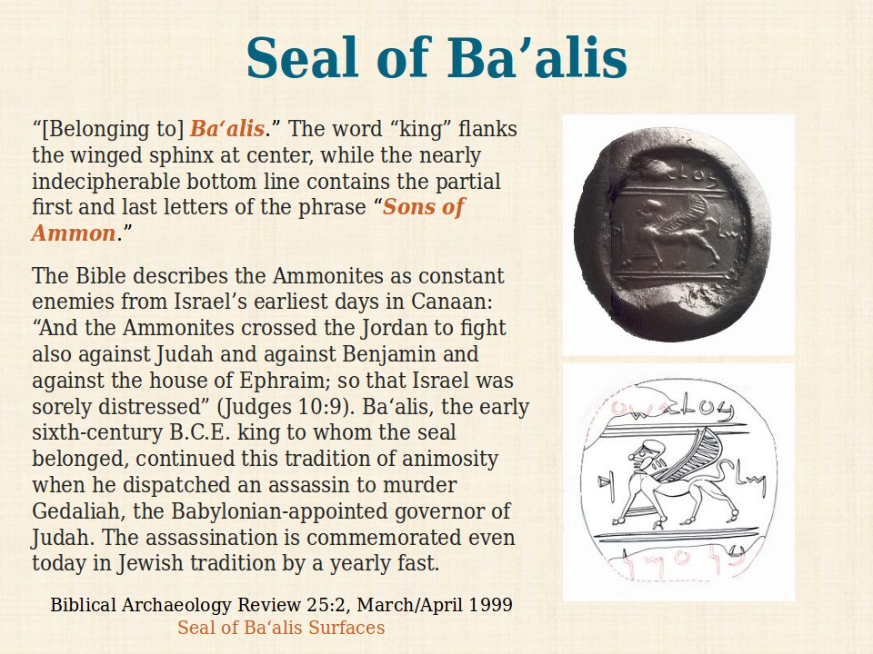
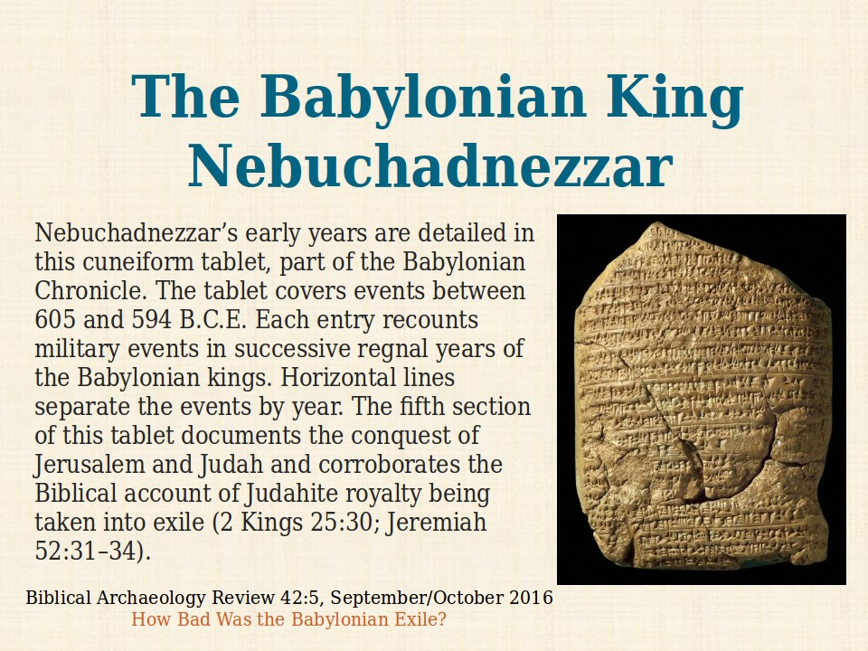
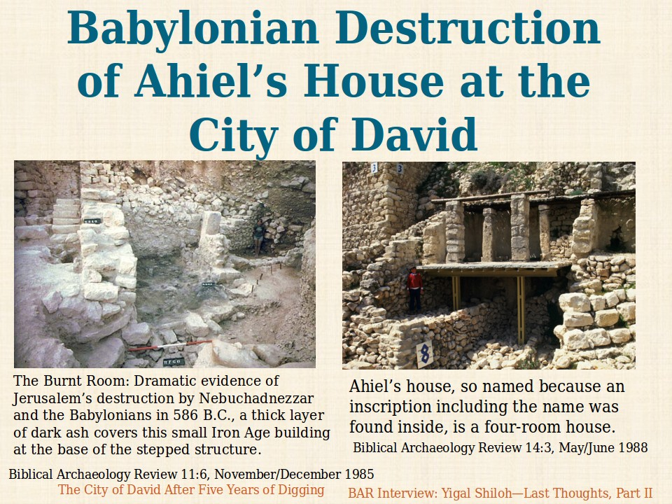
Previous
Next